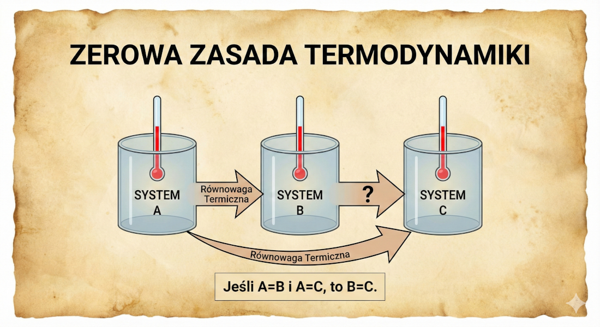

Proces nieskończenie powolny, który w każdej chwili znajduje się nieskończenie blisko stanu równowagi termodynamicznej.
Może być odwrócony przez nieskończenie małą zmianę parametrów układu i otoczenia.
Znaczenie Inżynierskie:
Procesy kwazistatyczne są często używane jako idealny model porównawczy dla rzeczywistych (nieodwracalnych) maszyn cieplnych i chłodniczych.
Przykłady procesów kwazistatycznych
Rozprężanie adiabatyczne przy braku tarcia, Obieg Carnota, Otto, Diesla czy Rankine’a
Parametry Stanu
Podstawowe Wielkości Makroskopowe
Parametry Stanu: Wielkości, które opisują stan układu i są funkcjami stanu (ich zmiana zależy tylko od stanu początkowego i końcowego).
Ciśnienie (\(p\)), Temperatura (\(T\)), Objętość (\(V\)) lub Objętość właściwa (\(v\)).
Wielkości Intensywne: Niezależne od rozmiaru (np. \(p, \ T, \ v\)).
Wielkości Ekstensywne: Zależne od rozmiaru (np. \(V\), \(U\)).
Analogia dla różnic pomiędzy wielkościami Intensywną i Ekstensywną
Wyobraź sobie szklankę gorącej herbaty. Jeśli przelejesz połowę herbaty do drugiej, identycznej szklanki, to objętość i masa napoju w każdej szklance zmniejszą się o połowę (są to parametry ekstensywne). Jednak temperatura herbaty w obu naczyniach pozostanie dokładnie taka sama jak na początku, ponieważ nie zależy ona od ilości płynu (jest to parametr intensywny).
Zasada Zerowa Termodynamiki
Definicja Temperatury
Sformułowanie: Jeśli system A jest w równowadze termicznej z systemem B, a system A jest w równowadze termicznej z systemem C, to systemy B i C są w równowadze termicznej między sobą.
Konsekwencja
Zasada zerowa jest logicznym fundamentem do zdefiniowania temperatury.
Jeśli B i C mają tę samą temperaturę, to są w równowadze.
 ***
Prostym językiem
Dwa ciała znajdujące się w równowadze termicznej z trzecim ciałem są także w równowadze termicznej między sobą.
Energia układu jako funkcja stanu
Energia wewnętrzna układu jest jego immanentną cechą, zależną wyłącznie od parametrów określających aktualny stan systemu.
Spadek energii układu adiabatycznego jest równy pracy wykonanej przez ten układ: \(E_{u1} - E_{u2} = L_{1-2}\)
Wniosek:
Energia jest funkcją stanu, co oznacza, że jej zmiana nie zależy od drogi przemiany, a jedynie od stanu początkowego i końcowego.
Praca i Ciepło: Formy przekazu energii, to funkcje procesu
W przeciwieństwie do energii, praca (\(L\)) i ciepło (\(Q\)) nie są postaciami energii ani funkcjami stanu.
Spostrzeżenie
“Praca i ciepło przestają istnieć z chwilą zakończenia zjawiska ich wykonywania lub przepływu. Pozostaje tylko skutek — zmieniona wartość energii ciał.”
Praca (\(L\)): Oddziaływanie, którego jedynym skutkiem zewnętrznym mogłoby być podniesienie ciężaru.
Ciepło (\(Q\)): Przekazywanie energii wynikające wyłącznie z różnicy temperatur między układami.
Jednostki miary
W układzie SI podstawową jednostką pracy, ciepła i energii jest dżul (J).
Ciśnienie makroskopowe (\(p\)) jest bezpośrednio związane z ruchami cząstek w mikroskali.
Równanie kinetyczne gazów: Ciśnienie zależy od liczby cząstek \(N\), masy \(m\) i średniej kwadratu prędkości \(\overline{v^2}\).
\[ p V = \frac{1}{3} N m \overline{v^2} \]
Właściwości ciśnienia: - W gazie jako całości rozkład prędkości jest izotropowy. - Ciśnienie to siła \(dF\) wywierana przez cząstki na pole powierzchni \(A\): \(p = dF/A\).
Manometr U-rurkowy
Proste urządzenie do pomiaru małych różnic ciśnień.
2. Współczynnik rozprężliwości (\(\beta\)): Mierzy względną zmianę ciśnienia przy stałej objętości. \[ \beta = \frac{1}{p} \left(\frac{\partial p}{\partial T}\right)_v \]
3. Współczynnik Ściśliwości Izotermicznej (\(\gamma\)): Mierzy względną zmianę objętości przy stałej temperaturze. \[ \gamma = -\frac{1}{V} \left(\frac{\partial V}{\partial p}\right)_T \]
Korelacja: Istnienie równania stanu implikuje, że wszystkie te trzy wielkości (\(\alpha, \beta, \gamma\)) są ze sobą powiązane.
Równanie Stanu
Funkcjonalny Związek
Równanie stanu to związek funkcyjny między parametrami stanu (\(p, V, T\)) dla układu będącego w równowadze termodynamicznej.
\[ f(p, V, T) = 0 \]
Cel: Umożliwia obliczenie brakującego parametru, gdy znane są pozostałe. Jest to punkt wyjścia dla analizy gazów.
Modele Gazu: Idealny vs. Rzeczywisty
Model Idealny: Gaz Doskonały
Równanie Clapeyrona
Równanie stanu dla 1 mola gazu doskonałego: \[ \frac{pV}{RT} = 1 \]
Kiedy działa? - Dla małych ciśnień i wysokich temperatur.
Ograniczenia: - Gazy rzeczywiste (He, N\(_2\), CH\(_4\), Ar) odbiegają od tego idealnego zachowania, szczególnie przy dużych ciśnieniach i niskich temperaturach.
Model Rzeczywisty: Gaz Rzeczywisty
Równanie Van der Waalsa
Równanie van der Waalsa koryguje model idealny, uwzględniając:
\[ \left(p + \frac{a}{V^2}\right) (V - b) = RT \]
Poprawki Fizyczne:
Objętość cząsteczek\(b\): Odejmujemy objętość własną cząsteczek od objętości \(V\) zbiornika. Wpływa to na ograniczenie dostępnej przestrzeni dla ruchu cząstek.
Oddziaływania\(a/V^2\): Dodajemy wewnętrzne ciśnienie wynikające z sił przyciągania między cząsteczkami. Poprawka ta uwzględnia fakt, że cząstki gazu rzeczywistego wzajemnie się przyciągają, co redukuje parcie na ścianki naczynia.
Implikacje Stanu Rzeczywistego
Stany Cieczy i Pary
Równanie van der Waalsa może dawać trzy różne objętości (\(V_1, V_2, V_3\)) dla stałych wartości \(p\) i \(T\).
\(V_1\): Objętość 1 mola cieczy.
\(V_2\): Objętość 1 mola pary nasyconej.
\(V_3\): Rozwiązanie bez znaczenia fizycznego.
Punkt Krytyczny (\(T_k\)): Wraz ze wzrostem temperatury \(T\), objętości cieczy (\(V_1\)) i pary (\(V_2\)) zbliżają się do siebie. W temperaturze krytycznej \(T_k\), \(V_1 = V_2 = V_k\).
Stany Metastabilne
Niestabilne Stany Równowagi
Równanie stanu van der Waalsa opisuje stany nietrwałe, które w rzeczywistości można osiągnąć w specyficznych warunkach:
1. Para Przesycona: Izotermiczne sprężanie pary niezawierającej ośrodków kondensacji (pyłków, jonów).
Te stany są nietrwałe. Małe zaburzenie może spowodować gwałtowne skroplenie (para przesycona) lub wrzenie (ciecz przegrzana)
Przemiany Fazowe
Wykresy \(p-T\)
Wykresy fazowe pokazują obszary w przestrzeni (\(p, T\)), w których substancja istnieje w danej fazie (stałej, ciekłej, gazowej lub ich równowadze).
Przykłady wykresów fazowych: - Woda (posiadająca punkt potrójny). - Hel-4 (posiadający linię \(\lambda\), która jest przejściem fazowym drugiego rodzaju do stanu nadciekłego).
Pytania Kontrolne
Czy zamknięta puszka z napojem w lodówce to układ otwarty czy zamknięty?
Czy temperatura w \(^\circ C\) jest parametrem intensywnym czy ekstensywnym?
Jeśli manometr na oponie pokazuje 2.2 bara, a ciśnienie otoczenia to 1 bar, jakie jest ciśnienie absolutne w oponie?